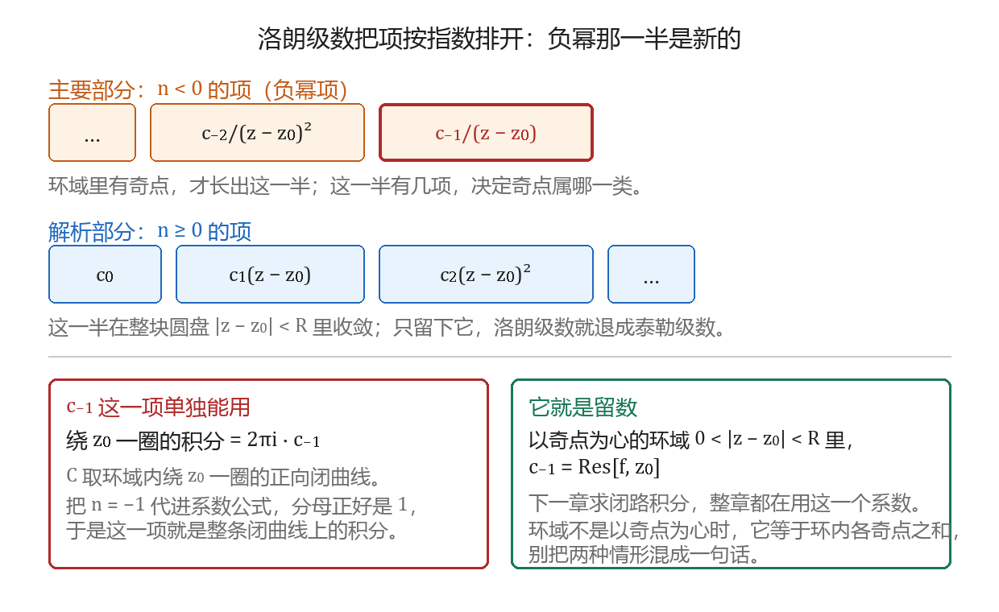
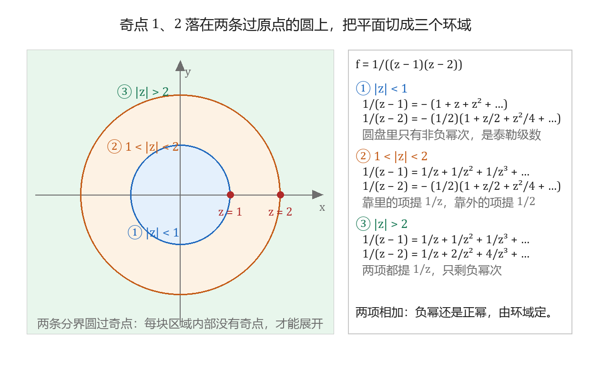

泰勒级数与洛朗级数
本节目标：能把函数在指定区域展开成泰勒级数或洛朗级数。
卷面怎么考
本课在公开试卷上的位置固定，问法只有一种形状：给一个函数与一两个环域，要你写出展开式。
- 解答题，10 分。合肥工业大学 2022 年卷的解答题第 6 题：「确定函数 f(z)=\frac{z+1}{(z-1)^2} 在圆环域 (1) 0<|z|<1；(2) 1<|z|<+\infty 内的洛朗级数展开式。」合肥工大 2025 年卷把同一形状的题压到 5 分，只留 1<|z|<2 一个环域。西安建筑科技大学那份卷把它排在第五大题（10 分）「求函数在以下各圆环内的罗朗展式」，两问以同一个奇点为心，一问在内、一问在外。
- 填空，3～4 分，只问区域有多大，不要级数。2025 年卷问「f(z)=\frac{\cos z}{z-3} 在 z=i 处泰勒展开等式成立的最大圆域半径」；2023 年卷问「f(z)=\frac{1}{(z+5)\sin z} 可以在圆环域 0<|z|<R 内作洛朗展开，R 的最大值」。
- 选择，3～4 分，问哪个区域不能展开。2024 年卷的选择第 4 题给「f(z)=\frac{z-1}{z^2-z-2} 不能在哪个区域内作洛朗展开」四个候选环域，其中 0<|z|<2 把奇点 -1 圈在里面，那就是答案；2025 年卷的选择第 4 题反过来，给四个函数与各自的区域，问哪一个不能展开成双边幂级数。两处的判据同一条：区域里 f 要处处解析。
- 分给在步骤上。参考答案把「f(z) 的奇点是 1,2，因此 f(z) 在这两个圆环域内都解析」写成第一行，每凑一个几何级数标 1～3 分，最后合并系数再标 2 分。
本课只求会算。定理的证明与存在性的讨论都不在考核范围内，下面给出的结论直接拿来用。
唤醒：两个旧式子
高等数学里对 |x|<1 有
右端是公比为 x 的等比级数。本课几乎每一步都归结到这条等式：先把要展开的函数拆成若干项，再让每一项凑成 \frac{1}{1-w} 的样子。等号旁边的 |x|<1 与等式本身同等重要——w 取成什么，决定了这一项在哪块区域里成立。
第二个旧式子是实变函数的泰勒展开：若 f 在 x_0 处有各阶导数，则对 |x-x_0|<R 有
复变函数里同一件事仍然成立，差别在于成立范围由奇点定下来。幂级数与收敛半径的算法上一课已学，这里直接使用结论。
泰勒级数：系数从哪来
设 f(z) 在圆盘 |z-z_0|<R 内解析，则在该圆盘内
其中 C 是圆盘内绕 z_0 一圈的正向简单闭曲线。这个展开称为 f 在 z_0 处的泰勒级数，z_0=0 时也叫麦克劳林级数。泰勒（B. Taylor）在 1715 年给出的是实变量的形式，复变量的这个结论由柯西建立。
两个等号说的是同一件事：第一个等号把系数写成高阶导数，第二个等号正是第 9 课的高阶导数公式。系数全部来自 f 在 z_0 的高阶导数，所以只要 f 在圆盘内解析，展开就自动存在。卷面上很少让你用导数算系数，用得多的是下面这张表与它的换元。
| 函数 | 展开式 | 成立范围 |
|---|---|---|
| \frac{1}{1-z} | \sum_{n=0}^{\infty}z^n | \vert z\vert<1 |
| \frac{1}{1+z} | \sum_{n=0}^{\infty}(-1)^n z^n | \vert z\vert<1 |
| \frac{1}{(1-z)^2} | \sum_{n=0}^{\infty}(n+1)z^n | \vert z\vert<1 |
| e^z | \sum_{n=0}^{\infty}\frac{z^n}{n!} | 全平面 |
| \sin z | \sum_{n=0}^{\infty}\frac{(-1)^n z^{2n+1}}{(2n+1)!} | 全平面 |
| \cos z | \sum_{n=0}^{\infty}\frac{(-1)^n z^{2n}}{(2n)!} | 全平面 |
第三行由第一行逐项求导得到：\frac{1}{(1-z)^2} 是 \frac{1}{1-z} 的导数，右边逐项求导，z^n 变成 nz^{n-1}，重排后得到 (n+1)z^n。合肥工大卷的参考答案就是用「先求导再合并」处理这一类分母带平方的函数的。
展开中心不在原点时，先提常数、再把 z-z_0 当作新变量。求 e^z 在 z=i 处的展开：
圆越大的极限由奇点定：泰勒展开成立的最大圆域半径等于 z_0 到 f 最近奇点的距离。填空考的正是这一条。f(z)=\frac{\cos z}{z-3} 的奇点只有 3（分子 \cos z 处处解析），z_0=i 到它的距离是 |i-3|=\sqrt{10}，所以最大圆域半径是 \sqrt{10}，卷面上写这个数。
洛朗级数：环域与负幂项
洛朗（P. A. Laurent）在 1843 年把展开推广到函数带奇点的情形：只要求函数在一个圆环里解析，中心附近可以带奇点。教材因此称它为洛朗级数；西建大那份卷写作「罗朗」，指的是同一件事。
环形域（环域）指两个同心圆之间的部分，记作 r<|z-z_0|<R，其中 0\le r<R\le+\infty。r=0 时它退成去心邻域 0<|z-z_0|<R，R=+\infty 时退成圆外区域 |z-z_0|>r。这两端都是环域的特例，卷面上都出现过。
设 f(z) 在环域 r<|z-z_0|<R 内解析，则在该环域内
其中 C 是环域内绕 z_0 一圈的正向简单闭曲线。展开在这条环域内唯一：同一个环域里，无论用哪种办法算出来的系数都相同。
与泰勒级数相比，指数从 -\infty 起，出现了 z-z_0 的负幂项。n<0 的项合称主要部分，n\ge 0 的项在环域内给出一个解析函数，合称解析部分。环域内部不许有奇点，奇点只能待在内圆以内（含 z_0 自己）或外圆以外——负幂项就是这些奇点留下的痕迹。只剩解析部分时，它就是泰勒级数。
系数公式同样是理论上的路。卷面上的洛朗展开一律走下一节的间接展开法，系数公式只用来看清 c_{-1} 的地位。

assets/img/gen/洛朗-级数-负幂项与主要部分-本机-02.py），许可：本项目自产）环域怎么定
展开的前提是环域里没有奇点。所以动笔的第一件事是把 f 的奇点找全，再看题目给的环域有没有把它们圈进去。
环域的边界由奇点到中心的距离决定。以 z_0 为心，把各奇点到 z_0 的距离从小到大排成一列，相邻两个距离之间就是一个环域：最内一圈从 z_0 自己起（若 z_0 是奇点则是 0<|z-z_0|<\cdots），最外一圈到 +\infty。卷面给的就是这种分法。
| 题面的样子 | 动作 |
|---|---|
| 已经给了环域，如 1<\vert z\vert<2 | 照它做，先确认环内没有奇点，再定每一项提什么 |
| 问「能在哪个区域内展开」 | 数每个候选区域里的奇点，有奇点即排除 |
| 问「展开成立的最大圆域半径」 | 量 z_0 到最近奇点的距离 |
| 问「环域 0<\vert z\vert<R 中 R 的最大值」 | 同上，取最近奇点到中心的距离 |
以原点为心展开 f(z)=\frac{1}{(z-1)(z-2)} 为例，奇点是 1 与 2，两条分界圆是 |z|=1 与 |z|=2，平面被切成 |z|<1、1<|z|<2、|z|>2 三块。同一个函数若以 z=1 为心展开，距离变成 0（奇点 1 本身，要挖掉）与 1（奇点 2），环域是 0<|z-1|<1 与 |z-1|>1。一道题的两问通常各取一种分法，先看清 z_0 再排距离。
填空那两处按这一条算。\frac{1}{(z+5)\sin z} 的奇点是 z=-5 与 \sin z 的零点 0,\pm\pi,\pm2\pi,\dots；环域 0<|z|<R 已经把 z=0 挖掉，剩下最近的是 z=\pm\pi，所以 R 的最大值是 \pi。

assets/img/gen/洛朗-环域-奇点切分三个环域-本机-01.py），许可：本项目自产）间接展开法：四步
10 分的大题按四步给分，顺序不要调换。
第一步，定环域。 找出全部奇点，确认题目给的环域里没有它们。这一行要写在卷面上，参考答案给 1 分。
第二步，选中心。 题目给的环域写成 |z-z_0| 的式子，z_0 就是展开中心，所有项都要凑成 z-z_0 与 \frac{1}{z-z_0} 的组合。中心一旦选错，后面四步全部作废。
第三步，拆部分分式。 把有理函数拆成 \frac{A}{z-a}+\frac{B}{z-b}+\cdots。例如
拆法两种：两边乘 z-a 后令 z\to a，或者待定系数解方程。分母有重根时多写一层，\frac{1}{(z-1)^2} 与 \frac{1}{z-1} 各占一项。
第四步，凑几何级数并写成立范围。 每一项只有一种拆法能对上环域，判据是 |z| 与 |a| 谁大：
- 在 |z|<|a| 里提常数：\frac{1}{z-a}=-\frac{1}{a}\cdot\frac{1}{1-z/a}=-\sum_{n=0}^{\infty}\frac{z^n}{a^{n+1}}，成立范围 |z|<|a|。
- 在 |z|>|a| 里提 \frac{1}{z}：\frac{1}{z-a}=\frac{1}{z}\cdot\frac{1}{1-a/z}=\sum_{n=0}^{\infty}\frac{a^n}{z^{n+1}}，成立范围 |z|>|a|。
每写一个几何级数，就在等号右边标出它成立的区域；几块的成立范围求交集，必须正好是题目给的那条环域。交集比题目给的环域小，说明某一块提错了公因子。
判据只有一条：这一项所在的位置，|z| 比 |a| 大还是小。写成不写成立范围一般不影响得分，可它正是判断提哪个公因子的依据，省掉它，两个环域的幂次就容易抄反。
同一个函数三个环域
以 f(z)=\frac{1}{(z-1)(z-2)}=\frac{1}{z-2}-\frac{1}{z-1} 为例，奇点是 1 与 2，中心取原点，三个环域各算一次。
在 |z|<1 里两项都落在圆内，都提常数：
在 1<|z|<2 里，\frac{1}{z-1} 落在圆外，提 \frac{1}{z}；\frac{1}{z-2} 仍在圆内，提常数：
在 |z|>2 里两项都在圆外，都提 \frac{1}{z}：
第三条展开可以在 z=3 处验算：f(3)=\frac{1}{(3-1)(3-2)}=\frac{1}{2}，而右端代入 z=3 得 \frac{1}{9}+\frac{3}{27}+\frac{7}{81}+\frac{15}{243}+\cdots=\frac{1}{2}，两者一致。z=3 落在第三条环域 |z|>2 里，却在前两条环域之外，那两条展开在这一点发散：每一条展开只在它自己的环域内成立。
三项的差别全在幂次：同一个 \frac{1}{z-2}，在 |z|<2 的两条环域里是 z 的幂，在 |z|>2 里是 \frac{1}{z} 的幂；同一个 \frac{1}{z-1}，在 |z|<1 里是 z 的幂，在另外两条环域里是 \frac{1}{z} 的幂。判据始终是 |z| 与奇点距离谁大。
第一条环域里没有负幂项，那一支就是泰勒级数。第二、三条里的负幂项来自内圆里面的奇点：奇点被关在环域的内圆里，展开就只能用 \frac{1}{z} 的幂去描述它。
负幂项里最关键的一项
把 n=-1 代进系数公式，分母的幂变成 (\zeta-z_0)^{0}=1，于是
沿环域内任意一条绕 z_0 一圈的正向闭曲线积分，值只由这一个系数定下来，其余系数都不参与。上一节的三条展开里，c_{-1} 可以直接从系数读出来：1<|z|<2 那条里是 -1，|z|>2 那条里是 0。
在 0<|z-z_0|<R 这样的去心邻域里，z_0 是 f 的孤立奇点，c_{-1} 有一个专门的名字：f 在 z_0 的留数，记作 \operatorname{Res}[f,z_0]。第 14 课起的留数定理整章都建立在它上面：闭路积分的值等于 2\pi i 乘圈内各奇点的留数之和。卷面上求「圆环内的洛朗展式」与求「奇点处的留数」因此是同一套动作的两半，前者要全部系数，后者只要 c_{-1}。
两种情形要分清。环域以奇点为心时（如 0<|z-i|<1），c_{-1} 就是那一个奇点的留数；环域不以奇点为心时（如 1<|z|<2），c_{-1} 仍由同一条公式定义，但它等于环内各奇点留数之和，问「某点的留数」时不能用它顶替。西建大卷的第五大题两问都以奇点为心，答完两问顺手写出 c_{-1}，这一题就与下一章接上了。
练习：三个环域各写一遍
第一问：中心取原点，把 f(z)=\frac{1}{(z-1)(z-2)} 在 |z|<1、1<|z|<2、|z|>2 里各展开一次。每一步只写两行——几何级数连同它的成立范围，再把两块相加。
第二问：把中心换成奇点，f(z)=\frac{1}{z(z-1)} 在 0<|z|<1 与 |z|>1 里各展开一次（合肥工大卷那道 10 分题就是这个形状），两问都顺手写出 c_{-1}，看它在哪一问为零。
第三问：把用过的三条判据抄进纸笔题型整理册——环域由奇点距离切分、|z| 与距离谁大就提谁、每个几何级数都标出成立范围，每条配一道自己的例题。
本课的小 lab 收在科目目录的 lab/ 下、目录名以 0012 开头：任务书与断言都在那里，lab/README.md 写着任务表与卡壳时的提示顺序。
带走的公式卡
| 要写的东西 | 写法 |
|---|---|
| 泰勒级数 | f(z)=\sum_{n=0}^{\infty}c_n(z-z_0)^n，c_n=\frac{f^{(n)}(z_0)}{n!} |
| 泰勒展开的最大圆域半径 | z_0 到最近奇点的距离 |
| 洛朗级数 | f(z)=\sum_{n=-\infty}^{+\infty}c_n(z-z_0)^n，在 r<\vert z-z_0\vert<R 内 |
| 圆内提常数 | \vert z\vert<\vert a\vert 时 \frac{1}{z-a}=-\frac{1}{a}\cdot\frac{1}{1-z/a} |
| 圆外提 \frac{1}{z} | \vert z\vert>\vert a\vert 时 \frac{1}{z-a}=\frac{1}{z}\cdot\frac{1}{1-a/z} |
| 负幂项的地位 | \oint_C f\,dz=2\pi i\,c_{-1}；以奇点为心时它就是该点的留数 |
- 李君、于非非《复变函数与积分变换》§3.3 泰勒级数与洛朗级数
- 合肥工业大学期末试卷（含答案与逐题分值）
- 复变函数与积分变换试题及答案（西安建筑科技大学）
- 复变积分 B 集习题（西安建筑科技大学，按节分组）